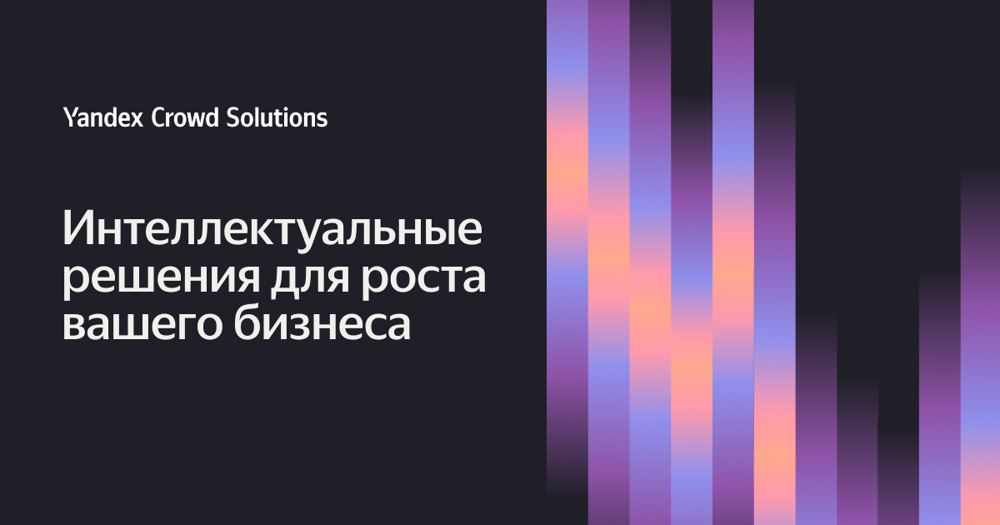
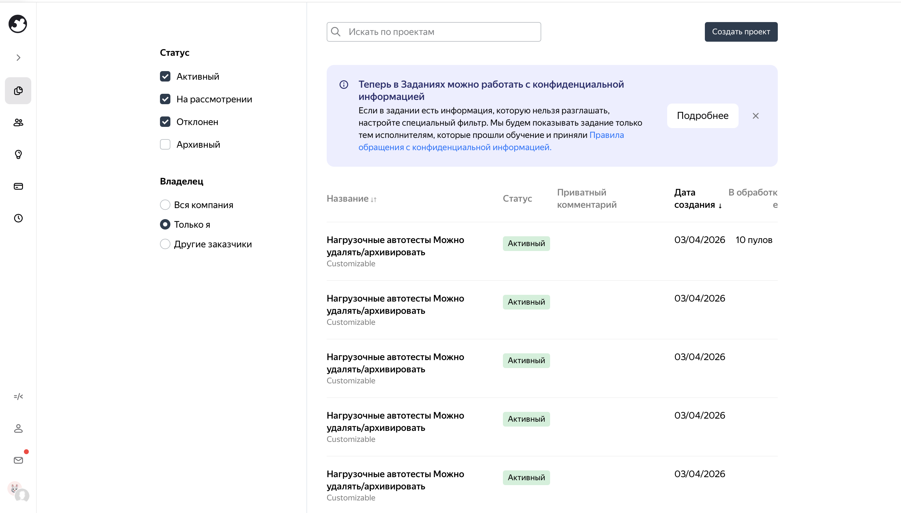
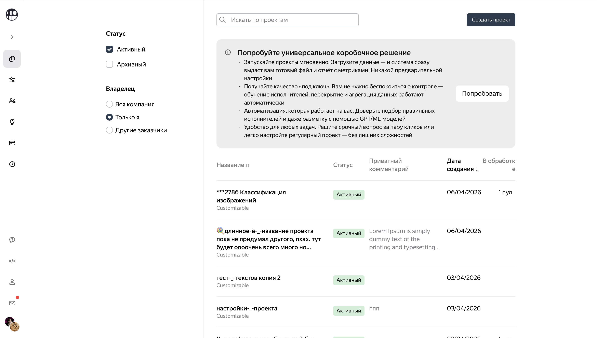
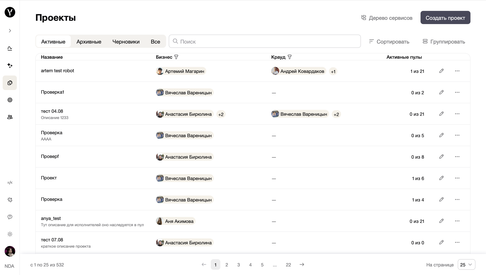

Личный кабинет
заказчика
Как мы шли к единому кабинету при объединении Янга и Заданий и куда пришли
Янг и Задания исторически жили как два продукта с разной юридикой, но с общей кодовой базой — команда шла к единому личному кабинету и копированию проектов между платформами.
Моя роль — дизайнер продукта: концепция и информационная архитектура, согласование с несколькими продактами, затем координация витимов, дизайн-ревью и шаблоны компонентов.
Хронология 2024–2026, миграция пользователей; после релиза — аудит и закрытие дизайн-долга.

Зачем в кейсе личный кабинет
Личный кабинет — это упрощение флоу: одна точка входа в разметку заданий, общий список проектов, возможность быстро и просто копировать сущности между платформами.
Что было до
Два продукта и одна кодовая база
Раньше было два продукта: Яндекс Задания и Янг. Внутри они ничем не отличались друг от друга, у них была одинаковая кодовая база, мы поддерживали одинаковые фичи для обоих продуктов. С точки зрения дизайна и кода это практически одинаковые продукты.


Один и тот же паттерн интерфейса для заказчика.
Юридика и типы исполнителей
Главное отличие — в юридической стороне вопроса: в Янге работают нанятые исполнители. Это исполнители на ГПХ, эксперты, заключившие с контрактором договор о неразглашении. Им мы доверяем сложную экспертную разметку, NDA-данные, чувствительный контент.
В Яндекс Заданиях работают самозанятые исполнители. Они не подписывали (за некоторым исключением) никаких договоров, размечают простые задания.
В Янге исполнителей меньше, каждый из них стоит дороже. В Заданиях много исполнителей, а стоимость ниже.
Перенос проектов между платформами
В теории, чтобы экономить деньги на разметке, можно перекидывать проекты попроще в Задания.
Но так как это две независимые платформы, сделать это технически непросто — весь перенос только вручную, а у проектов много настроек.
Поэтому на практике проекты чаще заводятся в Янге: это привычно и быстро, достаточно скопировать — и всё заведётся. Так устроено для людей, которым привычнее работать в одной платформе; заказчики в итоге теряют деньги на дорогой разметке там, где справились бы исполнители Заданий.
Идея объединения
Идея объединить платформы зрела давно.
Главный плюс объединения платформ
- Пользователь сможет копировать проекты между платформами (в целевом виде мы хотим отказаться от платформ и прийти к другой терминологии, но пока не позволяет легаси).
Попутно решаем и другие задачи
- ускорение запуска разметки;
- утилизация исполнителей за счёт шаринга между подразделениями;
- внедрение метрик прямо в продукт (сейчас ходят в DataLens);
- снижение затрат на поддержку;
- уменьшение техдолга и bus factor;
- внедрение ИИ и автоматизаций.
Информационная архитектура платформы
На FigJam зафиксирована схема «Платформа» — от корня расходятся разделы продукта для заказчика.
Витрина услуг
- Разметка
- Модерация
- Пешеходный крауд
- Дизайн
- Другие услуги
Аналитика (дашборд)
- Виджеты: вид, «лампочки», бюджеты, воронки
- Фильтрация
- Подписка на уведомления от виджета
Кроссплатформенные проекты NEW
Проекты
- Группировка, сортировка, аналитика по проекту
- Пулы: боевые, постмодерация, реабилитация, пресеты
- Обучения, инструкции, ответы и агрегации
- Песочница, сравнение моделей/промптов по метрикам
Хранилище · AI
- Песочница
- Разметка документов, «коробки»
- Сбор датасета
Центр управления
- Бюджеты: АБЦ, квоты, учёт затрат
- Квотатор: приоритеты, исполнители
Навыки и исполнители
- Списки, фильтры, карточка, массовые действия
- Команды, роли, блокировки, бонусы
Профиль
- Пользователи, доступ к аккаунту
- Личные данные, интеграции
- Роботы, Яндекс Диск, хранилища
Настройки
- Тема: светлая / тёмная / системная
- Язык: RU / EN
Уведомления
- Новые / прочитанные
NDA
- Ссылка от безопасности
Моя роль
Я участвовала в самых ранних стратсессиях и брейнштормах, рисовала концепции, информационную архитектуру, планы миграции.
С концепцией разной стадии зрелости мы с продактом ходили к конечным пользователям, кураторам, архитекторам, рабочей группе экспертов. В конце концов сформировали видение, утвердили стратегию и выбрали критичные флоу, которые переносим в первую очередь.
Это были: запуск проекта, пула, обучение исполнителей, отрисовка создания инструкции и шаблона интерфейса для исполнителей.
На этом этапе в проекте было уже 4 продакта, каждый приходил ко мне с задачами, иногда противоречивыми. Моей главной задачей стало удержать целостность концепции под шквальным огнём из запросов, рисовать кучу макетов очень быстро и не просыпать по пути никакие идеи и состояния. Это был прям челлендж. Я инициировала встречи для поддержания контекста (мы проводим их до сих пор), постоянно отсылала к информационной архитектуре, наглядно на схемах и макетах показывала, почему два решения не могут существовать одновременно.
Но мы смогли проработать много нюансов, продакты защитили концепцию, и в новое полугодие пошли уже не одной командой, а тремя витимами, в каждом из которых был дизайнер.
С этого времени моей задачей стало не только самой рисовать и не просыпать, но и координировать ребят, погружать их в особенности и нюансы. Я проводила много дизайн-ревью, следила за консистентностью, вникала во все процессы всех команд, создала шаблоны для большинства компонентов.
Хронология
- 2024, Q3–Q4 — начало работы над концепцией;
- 2025 — разделение команды продукта на витимы, детальная проработка, начало миграции;
- 2026 — внедряем новые фичи в ЛК; Янг и Задания остаются только на поддержке (не разрабатываем новое для них).
Цифры
- 35 исследовательских сессий самостоятельно или в паре с продактом на этапе формирования концепции;
- 5 основных и больше 20 дополнительных флоу проработали для миграции;
- 10 изменений претерпела концепция, а потом я перестала считать. «Я всё перепридумала» — была моей фразой полугодия, у нас даже есть что-то вроде командного мема на эту тему (мы смеёмся над ним, скрывая боль).
Работа над личным кабинетом ещё идёт и будет продолжаться ещё долго. Сейчас мы мигрировали первых пользователей, собираем фидбек.
Техкоманда очень торопилась выпустить релиз, поэтому мы договорились, что не будем сильно придираться к визуалу, не будем требовать пиксель-перфект. Это было ошибкой и породило кучу дизайн-долга. В начале 2026 года я провела полный аудит продукта и выявила порядка 50 моментов, которые требовали изменений; завела на это тикет с дизайн-долгом и продвигаю, чтобы его разбирали. Получилось закрыть уже больше половины.
Так как я стояла у самых истоков работы над ЛК, я воспринимаю его как своё детище. Мы вместе росли и менялись, прошли несколько стадий зрелости.
